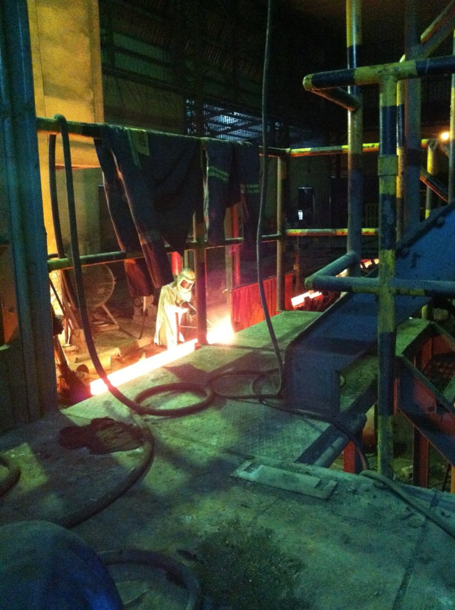

MAT 104 · LESSON 01 OF 11 · YEAR 1 · SEMESTER 1
Why materials fail the plant
Materials classes — metals, ceramics, polymers, composites — and what each trades away. Structure–property–processing–performance as the course's spine. Reading a failed component as a materials question.
Lecture
- Rank metals, ceramics, polymers by stiffness and by toughness — what trades where?
- State the structure–property–processing–performance chain for one familiar part.
§1 · Four families, four bargains
Every engineering material belongs to one of four families, and each family is a bargain with physics. Metals: stiff, strong, tough, conductive — but dense and corrodible. Ceramics: hard, refractory, chemically inert — but brittle, and brittle without apology. Polymers: light, cheap, formable, corrosion-immune — but soft, creep-prone, and temperature-limited. Composites: property combinations the families cannot reach alone — bought with cost and joining headaches. No family is best; each is best at something, and the selection question is always "what does this application refuse to forgive?"
§2 · The spine of the course
Materials science stands on one chain:
\[ \text{processing} \rightarrow \text{structure} \rightarrow \text{properties} \rightarrow \text{performance} \tag{1} \]Processing sets the internal structure — from atomic bonding through crystal defects to microstructure; structure sets the properties; properties decide whether the part survives service. The chain runs both directions: read it left-to-right to design a material, right-to-left to diagnose a failure. Every lesson in this course is one link examined closely.
§3 · The failed part is a materials question
A snapped bolt, a cracked impeller, a swollen seal — the maintenance floor sees these as events; this course teaches you to see them as structure speaking. Was the fracture surface woody and deformed (ductile, overload) or flat and crystalline (brittle, or fatigue)? Did the polymer harden and craze (thermal aging) or soften and smear (chemical attack)? Chain (1) run backwards is failure analysis, and it begins with knowing which family the part belongs to and what that family's bargain was.
Closing. Four families, one chain, two reading directions. Everything that follows — bonding, crystals, defects, strengthening — is the machinery inside the word "structure".
Foundations
What this lesson assumes
- General chemistry — atoms, electrons, the periodic table at school level.
- Stress and stiffness, informally — precise definitions arrive in Lesson 7.
Glossary
- Metal — metallically bonded solid; ductile, conductive, opaque.
- Ceramic — ionically/covalently bonded compound; hard, brittle, refractory.
- Polymer — long-chain molecular solid; light, compliant, temperature-limited.
- Composite — engineered combination of families (matrix + reinforcement).
- Microstructure — the internal arrangement (grains, phases, defects) that processing controls.
Worked Examples
Worked example 1 — stiffness per kilogram
Problem. Compare steel (\( E = 200\ \mathrm{GPa} \), \( \rho = 7850\ \mathrm{kg/m^3} \)) and aluminum (\( E = 69\ \mathrm{GPa} \), \( \rho = 2700\ \mathrm{kg/m^3} \)) on specific stiffness \( E/\rho \).
Solution. (1) Steel: \( 200 \times 10^9 / 7850 = 25.5 \times 10^6\ \mathrm{m^2/s^2} \). (2) Aluminum: \( 69 \times 10^9 / 2700 = 25.6 \times 10^6\ \mathrm{m^2/s^2} \).
Answer: essentially identical — a classic and initially shocking result. Sanity check: aluminum is one-third as stiff but also roughly one-third as dense; the ratio cancels. The lesson: "aluminum saves weight" is true only when the design is not limited by simple tensile stiffness — geometry (deeper, thinner sections) is where aluminum actually wins. Property data from Callister & Rethwisch.
Worked example 2 — same load, different family
Problem. A machine guard bracket in steel (\( E = 200\ \mathrm{GPa} \)) is proposed in glass-filled nylon (\( E \approx 2.8\ \mathrm{GPa} \), representative). Same geometry, same load. Find: the elastic deflection ratio.
Solution. (1) Elastic deflection at fixed geometry and load scales as \( 1/E \). (2) Ratio: \( 200/2.8 = 71 \).
Answer: the nylon bracket deflects ~71× more. Sanity check: that may be fine (a guard is not a bearing housing) or fatal (anything holding alignment). The number itself is neutral — the application's tolerance for deflection decides, which is §1's point: families are bargains, and you must know which clause of the bargain your part invokes.
Kuwait Floor
Vignette — one filling line, all four families. You arrive at a KDD line audit and read it as a materials taxonomy: stainless-steel product piping (metal — strength, cleanability), ceramic filler nozzle inserts (wear resistance where product abrades), PET bottles and LDPE film shrink-wrap (polymers — light, formable, cheap per unit), and a composite doctor blade on the labeler (stiffness with low mass, figures representative). Each choice is a family bargain accepted deliberately. Lesson 1's chain runs the floor: when the nozzle insert chips or the film tears at the seal bar, the diagnosis starts from what that family trades away.
Library
Taught from — Callister & Rethwisch, Ch. 1
No verified embeddable video is mapped to this specific lesson yet — verified links above and course-level courseware below are the study path.